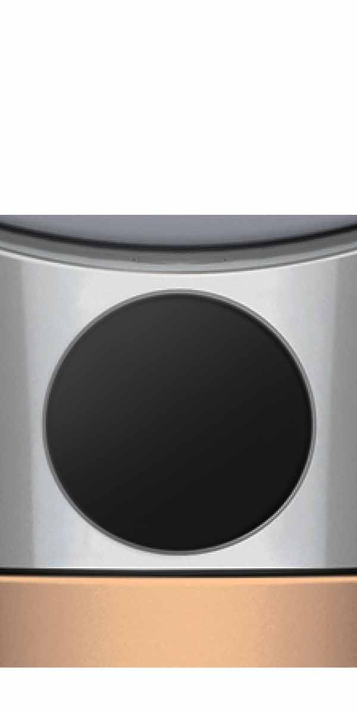
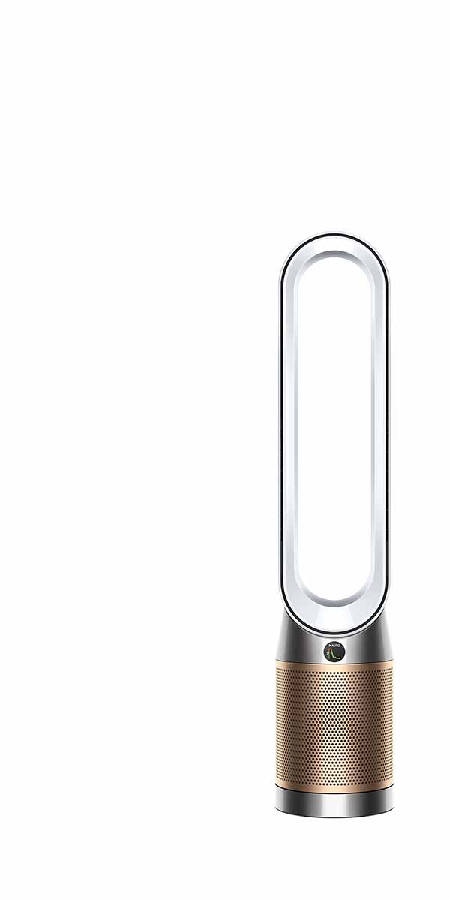
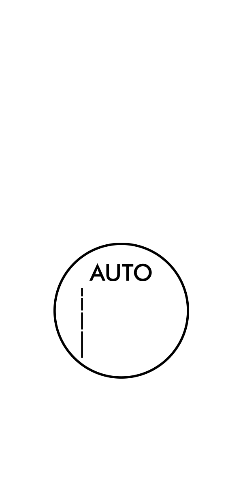
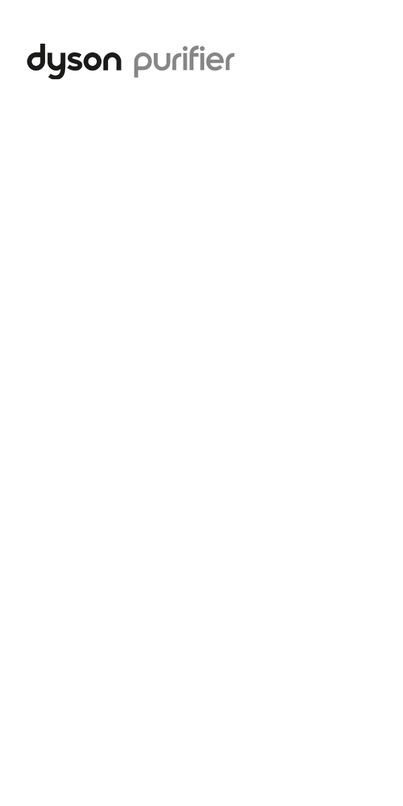
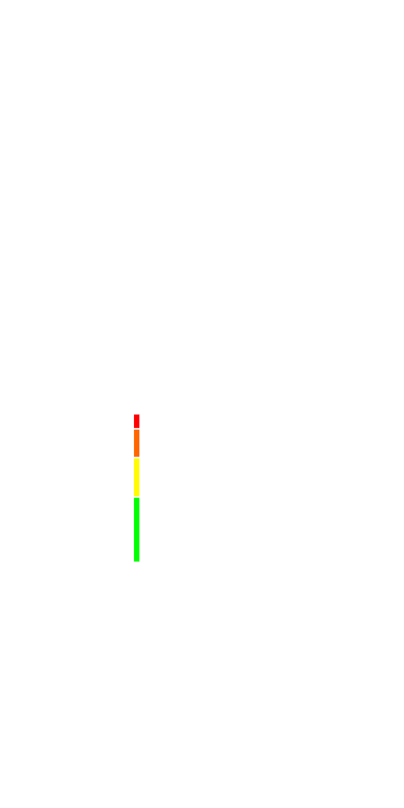
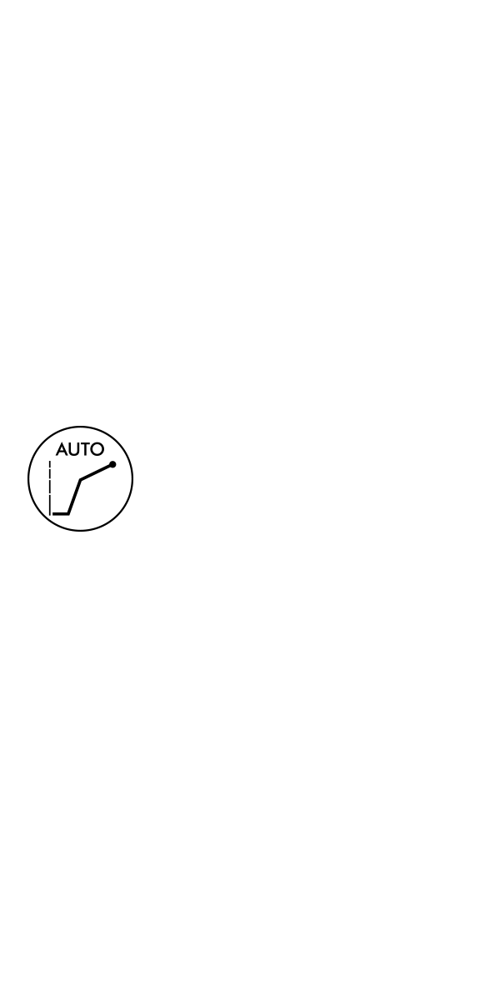

Choosing anair purifier?
Check it hasautomatic sensing
that detects andtracks householdpollutants
to filter themfrom your air.
Senses pollutantsautomatically
Discover whatelse to look for


Learn more

